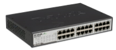

Коммутатор (свитч) — прибор с несколькими (4-32) портами, обычно используемый для объединения нескольких рабочих групп ЛВС (иначе называется многопортовый мост)
Коммутатор хранит в памяти (т.н. ассоциативной памяти) таблицу коммутации, в которой указывается соответствие MAC-адреса узла порту коммутатора. При включении коммутатора эта таблица пуста, и он работает в режиме обучения. В этом режиме поступающие на какой-либо порт данные передаются на все остальные порты коммутатора. При этом коммутатор анализирует фреймы (кадры) и, определив MAC-адрес хоста-отправителя, заносит его в таблицу на некоторое время. Впоследствии, если на один из портов коммутатора поступит кадр, предназначенный для хоста, MAC-адрес которого уже есть в таблице, то этот кадр будет передан только через порт, указанный в таблице. Если MAC-адрес хоста-получателя не ассоциирован с каким-либо портом коммутатора, то кадр будет отправлен на все порты, за исключением того порта, с которого он был получен. Со временем коммутатор строит таблицу для всех активных MAC-адресов, в результате трафик локализуется. Стоит отметить малую латентность (задержку) и высокую скорость пересылки на каждом порту интерфейса.
Режимы коммутации: